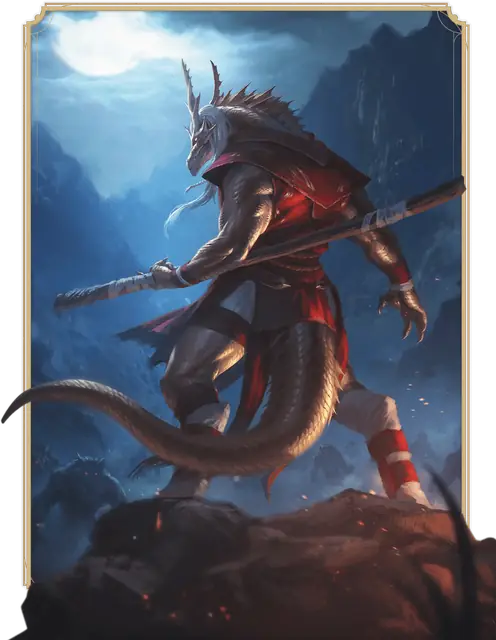

Монах
Monk

Основная характеристика Ловкость и Мудрость
Кость хитов К8 за уровень Монаха
Хиты за уровень 1к8 (или 5) + ваш модификатор Телосложения (суммарно минимум 1)
Владение спасбросками Сила и Ловкость
Владение навыками Выберите два: Акробатика, Атлетика, История, Проницательность, Религия, Скрытность
Владение оружием Простое оружие; Воинское оружие, обладающее свойством Лёгкое
Владение инструментами Выберите один тип Ремесленных инструментов или один Музыкальный инструмент
Тренированность с доспехами Нет
Начальное снаряжение Выберите А или Б:
(А) Копьё, 5 Кинжалов, Ремесленные инструменты или Музыкальный инструмент, выбранный для владения инструментами выше, Набор путешественника и 11 ЗМ;
или (Б) 50 ЗМ
| Уровень | Бонус владения | Классовые умения | Боевые искусства | Очки сосредоточенности | Движение без доспехов |
|---|---|---|---|---|---|
| 1 | +2 | Боевые искусства, Защита без доспехов | 1к6 | — | — |
| 2 | +2 | Монашеская сосредоточенность, Движение без доспехов, Феноменальный метаболизм | 1к6 | 2 | +10 фт. |
| 3 | +2 | Отражение атак, Подкласс монаха | 1к6 | 3 | +10 фт. |
| 4 | +2 | Увеличение характеристик, Медленное падение | 1к6 | 4 | +10 фт. |
| 5 | +3 | Дополнительная атака, Ошеломляющий удар | 1к8 | 5 | +10 фт. |
| 6 | +3 | Усиленные удары, Умение подкласса | 1к8 | 6 | +15 фт. |
| 7 | +3 | Увёртливость | 1к8 | 7 | +15 фт. |
| 8 | +3 | Увеличение характеристик | 1к8 | 8 | +15 фт. |
| 9 | +4 | Движение акробата | 1к8 | 9 | +15 фт. |
| 10 | +4 | Повышенная сосредоточенность, Восстановление себя | 1к8 | 10 | +20 фт. |
| 11 | +4 | Умение подкласса | 1к10 | 11 | +20 фт. |
| 12 | +4 | Увеличение характеристик | 1к10 | 12 | +20 фт. |
| 13 | +5 | Отражение энергии | 1к10 | 13 | +20 фт. |
| 14 | +5 | Дисциплина сохранения | 1к10 | 14 | +25 фт. |
| 15 | +5 | Полная сосредоточенность | 1к10 | 15 | +25 фт. |
| 16 | +5 | Увеличение характеристик | 1к10 | 16 | +25 фт. |
| 17 | +6 | Умение подкласса | 1к12 | 17 | +25 фт. |
| 18 | +6 | Совершенная защита | 1к12 | 18 | +30 фт. |
| 19 | +6 | Эпический дар | 1к12 | 19 | +30 фт. |
| 20 | +6 | Тело и разум | 1к12 | 20 | +30 фт. |
как персонаж 1-го уровня
Получите все атрибуты из таблицы «Ключевые атрибуты Монаха».
Получите умения Монаха 1-го уровня; они перечислены в таблице «Умения Монаха».
как мультиклассовый персонаж
Получите Кость хитов из таблицы «Ключевые атрибуты Монаха».
Получите умения Монаха 1-го уровня; они перечислены в таблице «Умения Монаха».
Уровень 1: Боевые искусства
Ваша практика боевых искусств позволяет вам овладеть боевыми стилями, в которых используются Безоружные удары и Монашеское оружие, которым считается:
• Простое рукопашное оружие
• Воинское рукопашное оружие, имеющее свойство Лёгкое
Пока вы не носите ни доспехов, ни Щита, и безоружны или вооружены только Монашеским оружием, вы получаете следующие преимущества:
Бонусный безоружный удар. Бонусным действием вы можете совершить один Безоружный удар.
Кость боевых искусств. Вы можете использовать к6 вместо обычного урона ваших Безоружных ударов и атак Монашеским оружием. Эта кость растёт с вашим уровнем Монаха, как показано в столбце «Боевые искусства» таблицы «Умения Монаха».
Ловкие атаки. Вы можете использовать Ловкость вместо Силы при совершении бросков атаки и урона Безоружных ударов и атак Монашеским оружием. Кроме того, при использовании вариантов Захват и Толчок Безоружного удара вы можете для расчёта Сл использовать ваш модификатор Ловкости, а не Силы.
Уровень 1: Защита без доспехов
Пока вы не носите ни доспехов, ни Щита, ваш базовый Класс Защиты равен 10 + ваши модификаторы Ловкости и Мудрости.
Уровень 2: Монашеская сосредоточенность
Ваш самоконтроль и боевая практика позволяют вам управлять собственным источником необычайной энергии. Степень владения этой энергией выражается в количестве Очков сосредоточенности. Количество доступных Очков зависит от вашего уровня Монаха, как показано в столбце «Очки сосредоточенности» таблицы «Умения Монаха».
Вы можете использовать эти очки, чтобы питать некоторые из умений Монаха. Вы изучаете три таких умения, описанных ниже: Шквал ударов, Терпеливая защита и Поступь ветра.
Когда вы тратите Очко сосредоточенности, оно больше недоступно, пока вы не завершите Короткий или Долгий отдых; по завершению отдыха вы восстанавливаете все потраченные очки.
Некоторые умения, использующие Очки сосредоточенности, требуют, чтобы цель совершила спасбросок. Сл такого спасброска равна 8 + ваши Бонус владения и модификатор Мудрости.
Поступь ветра. Бонусным действием вы можете совершать действие Рывок. Вы можете также потратить 1 Очко сосредоточенности, чтобы Бонусным действием совершить действия Отход и Рывок; в таком случае дальность ваших прыжков в этом ходу удваивается.
Терпеливая защита. Бонусным действием вы можете совершать действие Отход. Вы можете также потратить 1 Очко сосредоточенности, чтобы Бонусным действием совершить действия Отход и Уклонение.
Шквал ударов. Вы можете потратить 1 Очко сосредоточенности, чтобы Бонусным действием совершить два Безоружных удара.
Уровень 2: Движение без доспехов
Пока вы не носите ни доспехов, ни Щита, ваша Скорость увеличивается на 10 футов. Это увеличение растёт с уровнем Монаха, как показано в столбце «Движение без доспехов» таблицы «Умения Монаха».
Уровень 2: Феноменальный метаболизм
Когда вы совершаете бросок Инициативы, можете восполнить все потраченные Очки сосредоточенности. Если вы делаете это, бросьте вашу Кость боевых искусств; вы восстанавливаете Хиты в количестве, равном результату броска + ваш уровень Монаха.
Как только вы использовали это умение, не можете сделать это вновь, пока не завершите Долгий отдых.
Уровень 3: Отражение атак
Когда по вам попадают броском атаки, и в урон этой атаки включён Дробящий, Колющий или Рубящий урон, вы можете Реакцией уменьшить урон этой атаки. Урон снижается на 1к10 + ваши модификатор Ловкости и уровень Монаха.
Если урон оказался снижен до 0, вы можете потратить 1 Очко сосредоточенности и перенаправить часть мощи атаки. Если вы делаете это, выберите видимое вами в пределах 5 футов от вас существо, если атака была рукопашной; если атака была дальнобойной, выберите видимое вами в пределах 60 футов от вас существо, не находящееся за Полным укрытием. Выбранное существо должно преуспеть в спасброске Ловкости, иначе получит урон того же типа, что наносила атака, равный броску двух ваших Костей боевых искусств + ваш модификатор Ловкости.
Уровень 3: Подкласс монаха
Вы получаете подкласс Монаха по вашему выбору. Подкласс — это специализация, которая даёт вам умения на определённых уровнях Монаха. Вы всегда получаете все умения подкласса, уровень которых не больше вашего уровня Монаха.
Уровень 4: Увеличение характеристик
Вы получаете черту Увеличение характеристик или другую черту на ваш выбор, требованиям которой вы соответствуете.
Уровень 4: Медленное падение
При падении вы можете Реакцией уменьшить получаемый от падения урон на число, равное вашему уровню Монаха, умноженному на 5.
Уровень 5: Дополнительная атака
Когда в ваш ход вы используете действие Атака, вы можете совершить не одну, а две атаки.
Уровень 5: Ошеломляющий удар
Один раз за ход, когда вы попадаете по существу Безоружным ударом или атакой Монашеским оружием, вы можете потратить 1 Очко сосредоточенности, чтобы попытаться ошеломить врага. Цель атаки должна совершить спасбросок Телосложения. При провале цель получает состояние Ошеломлённый до начала вашего следующего хода. При успехе Скорость цели уменьшается вдвое до начала вашего следующего хода, а следующий бросок атаки по этой цели до начала вашего следующего хода совершается с Преимуществом.
Уровень 6: Усиленные удары
Когда вы наносите урон Безоружным ударом, его тип может быть на ваш выбор обычным типом урона этой атаки или Силовым уроном.
Уровень 6: Умение подкласса
Вы получаете все умения подкласса Монаха 6-го уровня.
Уровень 7: Увёртливость
Если вы попадаете под действие эффекта, который позволяет вам совершить спасбросок Ловкости, чтобы получить только половину урона, вместо этого вы не получаете вовсе никакого урона, если спасбросок был успешен, и получаете только половину урона, если он был провален.
Вы не можете использовать это умение, если имеете состояние Недееспособный.
Уровень 8: Увеличение характеристик
Вы получаете черту Увеличение характеристик или другую черту на ваш выбор, требованиям которой вы соответствуете.
Уровень 9: Движение акробата
Пока вы не носите ни доспехов, ни Щита, вы получаете способность в ваш ход перемещаться по вертикальным поверхностям и поверхностям жидкостей, не падая во время движения.
Уровень 10: Повышенная сосредоточенность
Ваши Шквал ударов, Терпеливая защита и Поступь ветра получают следующие преимущества:
Поступь ветра. Когда вы тратите Очко сосредоточенности, чтобы применить Поступь ветра, можете выбрать согласное существо Большого размера или меньше в пределах 5 футов от вас. До конца этого хода вы перемещаете это существо с собой. Это перемещение существа не провоцирует по нему Провоцированных атак.
Терпеливая защита. Когда вы тратите Очко сосредоточенности, чтобы применить Терпеливую защиту, вы получаете Временные хиты в количестве, равном броску двух ваших Костей боевых искусств.
Шквал ударов. Вы можете потратить 1 Очко сосредоточенности, чтобы применить Шквал ударов, совершая три Безоружных удара, а не два.
Уровень 10: Восстановление себя
Своей непреклонной волей вы можете в конце каждого вашего хода окончить на себе одно из следующих состояний: Испуганный, Отравленный или Очарованный.
Кроме того, отсутствие воды и пищи не приводит к получению вами Истощения.
Уровень 11: Умение подкласса
Вы получаете все умения подкласса Монаха 11-го уровня.
Уровень 12: Увеличение характеристик
Вы получаете черту Увеличение характеристик или другую черту на ваш выбор, требованиям которой вы соответствуете.
Уровень 13: Отражение энергии
Теперь вы можете использовать ваше умение Отражение атак против атак, наносящих урон любого типа, а не только Дробящий, Колющий или Рубящий.
Уровень 14: Дисциплина сохранения
Дисциплинированность тела и разума даруют вам владение всеми спасбросками.
Кроме того, каждый раз, когда вы проваливаете спасбросок, можете потратить 1 Очко сосредоточенности, чтобы перебросить его. Вы должны использовать новый результат.
Уровень 15: Полная сосредоточенность
Когда вы совершаете бросок Инициативы и не используете Феноменальный метаболизм, а у вас 3 или меньше Очков сосредоточенности, вы восстанавливаете потраченные Очки сосредоточенности, пока у вас не будет 4 Очка.
Уровень 16: Увеличение характеристик
Вы получаете черту Увеличение характеристик или другую черту на ваш выбор, требованиям которой вы соответствуете.
Уровень 17: Умение подкласса
Вы получаете все умения подкласса Монаха 17-го уровня.
Уровень 18: Совершенная защита
В начале своего хода вы можете потратить 3 Очка сосредоточенности, чтобы защитить себя от вреда на 1 минуту или пока вы не получите состояние Недееспособный. На время действия этого эффекта вы обладаете Сопротивлением всему урону, кроме Силового урона.
Уровень 19: Эпический дар
Вы получаете черту из категории Эпических даров или другую черту по вашему выбору, требованиям которой вы соответствуете. Рекомендуется Дар неотразимого нападения.
Уровень 20: Тело и разум
Вы отточили владение своим телом и разумом. Ваши значения Ловкости и Мудрости увеличиваются на 4, но не выше 25.
Подклассы
Воин открытой ладони
Станьте мастером техник безоружного боя
Воины открытой ладони — мастера безоружного боя. Они изучают техники, позволяющие эффективно толкать и ронять врагов наземь, а также управлять энергией своего тела, защищая себя.
Уровень 3: Техники открытой ладони
Всякий раз, когда вы попадаете по существу атакой, дарованной Шквалом ударов, можете применить к цели один из следующих эффектов:
Запутать. Цель не может совершать Провоцированные атаки до начала своего следующего хода.
Толкнуть. Вы можете толкнуть цель на расстояние до 15 футов от себя, если она не преуспеет в спасброске Силы.
Опрокинуть. Цель получает состояние Опрокинутый, если не преуспеет в спасброске Ловкости.
Уровень 6: Целостность тела
Вы обретаете способность исцелять себя. Бонусным действием вы можете бросить Кость боевых искусств. Вы восстанавливаете Хиты в количестве, равном результату броска + ваш модификатор Мудрости (минимум 1 Хит).
Вы можете использовать это умение число раз, равное вашему модификатору Мудрости (минимум один раз), восстанавливая потраченное по завершению Долгого отдыха.
Уровень 11: Быстрые ноги
Когда вы совершаете любое Бонусное действие, кроме Поступи ветра, немедленно после этого Бонусного действия можете совершить Поступь ветра.
Уровень 17: Дрожащая ладонь
Вы обретаете способность создавать смертельные колебания в чужом теле. Когда вы попадаете по существу Безоружным ударом, можете потратить 4 Очка сосредоточенности и начать такие колебания, длящиеся число дней, равное вашему уровню Монаха. Колебания безвредны, пока действием вы не окончите их. Когда в ваш ход вы совершаете действие Атака, можете также заменить одну из атак этим действием. Чтобы окончить колебания, вы и цель должны находиться на одном плане бытия. Когда колебания оканчиваются, цель должна совершить спасбросок Телосложения, получая 10к12 Силового урона при провале или половину этого урона при успехе.
Вы можете единовременно поддерживать колебания только в одном существе. Вы можете прекратить колебания, не причиняя вреда (действий не требуется).
Воин тени
Обуздай тёмную силу скрытности и хитрости
Воины тени практикуют скрытность и уловки, их резервы внутренней мощи питаются силой Царства Теней. Чувствуя себя во тьме как дома, они могут призывать скрывающую их мглу, прыгать из одной тени в другую и даже самим принимать призрачный облик тени.
Уровень 3: Тёмные искусства
В суровых тренировках вы научились черпать силы из Царства теней. Вы получаете следующие преимущества:
Тьма. Вы можете потратить 1 Очко сосредоточенности, чтобы сотворить заклинание Тьма, не требуя компонентов. Вы можете видеть в области действия сотворённого вами этим умением заклинания. Пока заклинание активно, в начале каждого своего хода вы можете переместить его область Темноты в пространство в пределах 60 футов от вас.
Тёмное зрение. Вы обретаете Тёмное зрение дальностью 60 футов. Если у вас уже есть Тёмное зрение, его дальность увеличивается на 60 футов.
Теневые обманки. Вы знаете заговор Малая иллюзия; ваша заклинательная характеристика для него — Мудрость.
Уровень 6: Шаг в тень
Если вы полностью в зоне Темноты или Тусклого света, то Бонусным действием вы можете телепортироваться в видимое вам незанятое пространство в пределах 60 футов от вас, также находящееся в зоне Темноты или Тусклого света. После телепортации вы совершаете с Преимуществом следующую рукопашную атаку, если она совершается до конца этого хода.
Уровень 11: Улучшенный шаг в тень
Используя ваше сродство с Царством Теней, вы можете усилить вашу телепортацию. Вы можете потратить 1 Очко сосредоточенности, чтобы использовать Шаг в тень, игнорируя требование к начальной и конечной точкам телепортации быть в зоне Темноты или Тусклого света. В таком случае частью этого Бонусного действия немедленно после телепортации вы можете совершить Безоружный удар.
Уровень 17: Покров теней
Если вы полностью в зоне Темноты или Тусклого света, то Бонусным действием вы можете потратить 3 Очка сосредоточенности, чтобы на 1 минуту окутать себя магической тьмой. Тьма рассеивается раньше, если вы получаете состояние Недееспособный или заканчиваете свой ход на Ярком свету. Пока вы окутаны этой тьмой, вы получаете следующие преимущества:
Невидимость. Вы получаете состояние Невидимый.
Частичная бестелесность. Вы можете проходить занятые пространства, как если бы они были Труднопроходимой местностью. Если вы заканчиваете свой ход в занятом пространстве, вас выталкивает в последнее незанятое пространство, в котором вы были.
Шквал теней. Вы можете использовать Шквал ударов, не тратя Очки сосредоточенности.
Воин милосердия
Управляй силами жизни и смерти
Воины милосердия манипулируют чужой жизненной силой. Эти Монахи — странствующие целители, но своим врагам они приносят быстрый конец. Они часто носят маски, преподнося себя как безликих подателей жизни и смерти.
Уровень 3: Орудия милосердия
Вы получаете владение навыками Медицина и Проницательность, а также владение Набором травника.
Уровень 3: Исцеляющая рука
Действием Магия вы можете потратить 1 Очко сосредоточенности, прикоснуться к существу и восстановить Хиты в количестве, равном броску вашей Кости боевых искусств + ваш модификатор Мудрости.
Когда вы используете ваш Шквал ударов, можете заменить один из Безоружных ударов использованием этого умения, не тратя на лечение Очко сосредоточенности.
Уровень 3: Повреждающая рука
Один раз в ход, когда вы попадаете по существу Безоружным ударом и наносите урон, можете потратить 1 Очко сосредоточенности, чтобы нанести дополнительный Некротический урон, равный броску вашей Кости боевых искусств + ваш модификатор Мудрости.
Уровень 6: Прикосновение целителя
Ваши Повреждающая рука и Исцеляющая рука получают следующие улучшения.
Исцеляющая рука. Когда вы используете Исцеляющую руку, можете также окончить на исцеляемом существе одно из следующих состояний: Оглохший, Ослепленный, Отравленный, Ошеломлённый или Парализованный.
Повреждающая рука. Когда вы используете Повреждающую руку против существа, можете также наложить на это существо состояние Отравленный до конца вашего следующего хода.
Уровень 11: Шквал исцеления и повреждения
Когда вы используете Шквал ударов, вы можете заменить каждый из Безоружных ударов использованием Исцеляющей руки, не тратя на лечение Очко сосредоточенности.
Кроме того, когда вы совершаете Безоружный удар Шквалом ударов и наносите урон, вы можете использовать с этим ударом Повреждающую руку, не тратя на Повреждающую руку Очко сосредоточенности. Вы по-прежнему можете использовать Повреждающую руку только один раз за ход.
Вы можете использовать эти преимущества суммарно количество раз, равное вашему модификатору Мудрости (минимум один раз). Вы восстанавливаете все потраченные использования, когда завершаете Долгий отдых.
Уровень 17: Рука абсолютного милосердия
Ваше владение жизненной энергией открыло вам путь к наивысшему милосердию. Действием Магия вы можете прикоснуться к трупу существа, умершего в течение последних 24 часов, и потратить 5 Очков сосредоточенности. В таком случае существо возвращается к жизни с Хитами в количестве, равном 4к10 + ваш модификатор Мудрости. Если существо умерло, имея следующие состояния, оно оживает уже без них: Оглохший, Ослепленный, Отравленный, Ошеломлённый или Парализованный.
Как только вы использовали это умение, не можете сделать это вновь, пока не завершите Долгий отдых.
Воин cтихий
Используй как оружие удары и выбросы мощи стихий
Воины стихий в своих практиках используют силу Стихийных планов. В невероятной сосредоточенности эти Монахи укрощают энергию Стихийного Хаоса, чтобы придать себе сил как в бою, так и вне его.
Уровень 3: Сродство со стихиями
В начале своего хода вы можете потратить 1 Очко сосредоточенности, наполняя себя энергией стихий на 10 минут или пока вы не получите состояние Недееспособный. Эта энергия дарует следующие преимущества:
Досягаемость. Когда вы совершаете Безоружный удар, выбросы стихийной энергии увеличивают его досягаемость на 10 футов.
Удары стихий. Когда вы попадаете Безоружным ударом, тип урона удара может быть не обычным типом урона этой атаки, а на ваш выбор уроном Звуком, Кислотой, Огнём, Холодом или Электричеством. Когда вы наносите урон одного из этих типов Безоружным ударом, можете заставить цель пройти спасбросок Силы. При провале вы можете призвать вихрь стихийной энергии, перемещающий цель на 10 футов от вас или к вам.
Уровень 3: Управление стихиями
Вы знаете заговор Элементализм. Вашей заклинательной характеристикой для него является Мудрость.
Уровень 6: Стихийный выброс
Действием Магия вы можете потратить 2 Очка сосредоточенности и сотворить прорыв окружающей вас энергии в 20-футовой Сфере с центром в точке в пределах 120 футов от вас. Выберите тип урона: Звук, Кислота, Огонь, Холод или Электричество.
Все существа в Сфере должны совершить спасбросок Ловкости, получая урон выбранного типа в размере трёх бросков вашей Кости боевых искусств при провале или половину этого урона при успехе.
Уровень 11: Поступь стихий
Пока на вас действует энергия Сродства со стихиями, у вас есть Скорость полёта и Скорость плавания, равные вашей Скорости.
Уровень 17: Воплощение стихий
Пока на вас действует энергия Сродства со стихиями, вы также получаете следующие преимущества.
Сопротивление урону. Вы получаете Сопротивление одному типу урона на ваш выбор: Звук, Кислота, Огонь, Холод или Электричество. В начале каждого своего хода вы можете изменить этот выбор.
Разрушительная поступь. Когда вы используете Поступь ветра, до конца этого хода ваша Скорость увеличивается на 20 футов и, когда вы входите в пространство в пределах 5 футов от существа, можете нанести ему урон, равный броску вашей Кости боевых искусств. Тип урона — на ваш выбор: Звук, Кислота, Огонь, Холод или Электричество. Каждое существо может получить этот урон только раз за ход.
Усиленные удары. Один раз в каждый свой ход при попадании Безоружным ударом вы можете нанести цели дополнительный урон, равный одному броску вашей Кости боевых искусств. Тип этого урона — тот же, что урон Безоружного удара.
Мистический воин
Сплетайте мистические силы и боевые искусства
Мистические воины усиливают боевые искусства магией. Сверхъестественную сосредоточенность на внутренних силах они поднимают на мистический уровень, улучшая как физические способности, так и магические.
Уровень 3: Сотворение заклинаний
Вы научились сотворять заклинания. Правила сотворения заклинаний смотрите в соответствующей статье. Следующая информация описывает, как эти правила использует Мистический воин.
Заговоры. Вы знаете два заговора на ваш выбор из списка заклинаний Чародея. Рекомендуются Защита от оружия и Раскат грома.
Каждый раз, когда вы получаете уровень Монаха, вы можете заменить один из этих заговоров другим заговором Чародея на ваш выбор.
Когда вы достигнете 10-го уровня Монаха, вы изучите ещё один заговор из списка заклинаний Чародея на ваш выбор.
Ячейки заклинаний. В следующей таблице указано, сколько у вас есть ячеек заклинаний для сотворения заклинаний 1-го уровня и выше. Вы восстанавливаете все потраченные ячейки, когда завершаете Долгий отдых.
| Уровень Монаха | Подготовленные заклинания | Ячейки 1-го уровня | Ячейки 2-го уровня | Ячейки 3-го уровня | Ячейки 4-го уровня |
| 3 | 3 | 2 | - | - | - |
| 4 | 4 | 3 | - | - | - |
| 5 | 4 | 3 | - | - | - |
| 6 | 4 | 3 | - | - | - |
| 7 | 5 | 4 | 2 | - | - |
| 8 | 6 | 4 | 2 | - | - |
| 9 | 6 | 4 | 2 | - | - |
| 10 | 7 | 4 | 3 | - | - |
| 11 | 8 | 4 | 3 | - | - |
| 12 | 8 | 4 | 3 | - | - |
| 13 | 9 | 4 | 3 | 2 | - |
| 14 | 10 | 4 | 3 | 2 | - |
| 15 | 10 | 4 | 3 | 2 | - |
| 16 | 11 | 4 | 3 | 3 | - |
| 17 | 11 | 4 | 3 | 3 | - |
| 18 | 11 | 4 | 3 | 3 | - |
| 19 | 12 | 4 | 3 | 3 | 1 |
| 20 | 13 | 4 | 3 | 3 | 1 |
Подготовленные заклинания 1-го уровня и выше. Вы подготавливаете список заклинаний 1-го уровня и выше, которые вы можете сотворять с помощью этого умения. Для начала выберите три заклинания 1-го уровня из списка заклинаний Чародея. Рекомендуются Волшебная стрела, Прыжок и Щит.
Количество заклинаний в вашем списке увеличивается по мере получения уровней Монаха, как указано в столбце «Подготовленные заклинания» таблицы заклинаний Мистического воина.
Когда это число увеличивается, выбирайте дополнительные заклинания Чародея до тех пор, пока их количество не сравняется с числом, указанным в этой таблице. Выбираемое заклинание может быть только такого уровня, для которого у вас есть ячейка заклинаний. Например, если вы Монах 7-го уровня, ваш список подготовленных заклинаний может включать пять заклинаний 1-го или 2-го уровня в любой комбинации.
Замена подготовленных заклинаний. Каждый раз, когда вы получаете уровень Монаха, вы можете заменить одно заклинание из своего списка другим заклинанием Чародея, для которого у вас есть ячейка заклинаний.
Заклинательная характеристика. Заклинательной характеристикой для ваших заклинаний Чародея является Мудрость.
Заклинательная фокусировка. Вы можете использовать Магическую фокусировку в качестве Заклинательной фокусировки для ваших заклинаний Чародея.
Уровень 6: Стиль мистического воина
Когда в ваш ход вы совершаете действие Атака, вы можете заменить один Безоружный удар сотворением одного из ваших заговоров Чародея со временем сотворения в действие.
Уровень 6: Мистическая сосредоточенность
Вы поддерживаете совершенное равновесие ваших магических сил и физических способностей. Это позволяет вам преобразовывать ячейки заклинаний в Очки сосредоточенности, а Очки сосредоточенности в ячейки заклинаний.
Преобразование ячеек заклинаний в Очки сосредоточенности. Вы можете потратить ячейку заклинаний, чтобы восстановить потраченные Очки сосредоточенности в количестве, равном уровню потраченной ячейки (действий не требуется).
Восстановление ячеек заклинаний. Когда вы используете Феноменальный метаболизм или завершаете Короткий отдых, вы можете преобразовать непотраченные Очки сосредоточенности, восстанавливая одну потраченную ячейку заклинаний. Таблица «Восстановление ячеек заклинаний» показывает, сколько Очков сосредоточенности нужно иметь для восстановления ячейки того или иного уровня, а также какой уровень Монаха для этого требуется. Вы не можете восстановить ячейку 5-го уровня или выше.
Восстановление ячеек заклинаний
| Уровень ячейки | Затраты Очков сосредоточенности | Требуемый уровень Монаха |
| 1 | 2 | 6 |
| 2 | 3 | 7 |
| 3 | 5 | 13 |
| 4 | 6 | 19 |
Уровень 11: Сфокусированный удар
Когда вы используете Ошеломляющий удар, его цель совершает с Помехой спасброски против ваших заклинаний до начала вашего следующего хода, вне зависимости от того, преуспела цель в спасброске или провалила его.
Уровень 17: Улучшенный стиль мистического воина
Когда вы используете Шквал ударов, вы можете заменить два Безоружных удара сотворением одного из ваших заклинаний Чародея 1-го или 2-го уровня со временем сотворения в действие; вы сотворяете это заклинание в рамках того же Бонусного действия, которым вы использовали Шквал ударов.
Воин змеи
Порхайте как мангуст, жальте как змея
Эти скромные мастера используют свои копья и посохи не только как оружие, но как продолжение себя, применяя его не только в сражении, но и для лучшей маневренности и удобства перемещения. Как змея в высокой траве, Воин пути змеи оттачивает способность предсказать вражеский выпад, отразить его и ударить самому — со смертельной точностью.
Уровень 3: Стиль змеи
Вы владеете Алебардами, Глефами, Пиками, Трезубцами и аналогичным древковым оружием. Это оружие считается для вас Монашеским оружием даже если не имеет свойства Лёгкое. Ваша ловкость и искусность в обращении с этим оружием позволяет вам совершать Безоружные удары даже держа оружие в двух руках.
Пока вы держите в двух руках Боевой посох, Копьё или Трезубец, это оружие считается обладающим свойством Досягаемость.
Пока вы держите древковое оружие, обладающее свойством Досягаемость, вы можете использовать его свойство мастерства, если владеете им, а свойство Тяжёлое такого оружия по вашему выбору требует для вас не Силы, а Ловкости.
Уровень 3: Прыжок змеи
Вы можете использовать древковое оружие, чтобы взвиваться в воздух. Пока вы держите оружие, обладающее свойством Досягаемость, дистанция ваших прыжков удваивается.
Если вы тратите Очко сосредоточенности, чтобы применить Поступь ветра, пока держите оружие, обладающее свойством Досягаемость, дистанция ваших прыжков в этот ход не удваивается, а утраивается; вы также получаете Преимущество на следующую рукопашную атаку, оружием или Безоружным ударом, совершаемую до конца этого хода.
Уровень 6: Змеиные удары
Вы узнали следующие техники, усиливающие ваши удары:
Удар кобры. Когда видимое вами существо перемещается в область вашей досягаемости, вы можете Реакцией совершить одну атаку по этому существу.
Удар удава. Когда вы попадаете по существу Провоцированной атакой, вы можете применить на эту атаку Оглушающий удар без траты Очка сосредоточенности.
Удар гадюки. Один раз в ход, когда вы попадаете со существурукопашной атакой, оружием или Безоружным ударом, вы можете потратить одно Очко сосредоточенности или более, но не больше, чем ваш Бонус владения; в таком случае цель получает состояние Отравленный до конца вашего следующего хода, а атака наносит дополнительный урон Ядом, равный 1к6 плюс 1к6 за каждое потраченное Очко сосредоточенности.
Уровень 11: Змеиные стойки
В начале вашего хода вы можете принять Змеиную стойку (действий не требуется): выберите одну из следующих стоек; эффекты этой стойки длятся, пока вы не получите состояние Недееспособный или пока не используете это умение снова.
Стойка анаконды. Пока вы находитесь в этой стойке, досягаемость ваших атак оружием и Безоружных ударов увеличена на 10 футов.
Стойка чёрной мамбы. Пока вы находитесь в этой стойке, один раз в ход, когда вы промахиваетесь атакой оружием, частью того же действия вы можете совершить дополнительную рукопашную атаку.
Стойка коатля. Пока вы находитесь в этой стойке, вы обладаете Скоростью полёта, равной вашей Скорости.
Стойка марилит. Пока вы находитесь в этой стойке, вы можете совершать по одной Реакции в каждый ход сражения, а не одну в раунд.
Уровень 17: Королевская кобра
Когда вы принимаете Змеиную стойку, можете вместо одной стойки принять эффекты сразу двух стоек одновременно.
Описание
Монахи практикуют суровую боевую подготовку и ментальную дисциплину, чтобы привести себя в резонанс с мультивселенной и получить доступ к внутренним источникам силы. Разные монахи по-разному понимают эту силу: например, как дыхание, энергию, жизненную силу, эссенцию или себя самое. Эта сила наполняет всё, что делает Монах, будь то ошеломительное боевое мастерство или более тонкая сосредоточенность на защите и скорости.
Монахи обуздывают и сосредотачивают свою внутреннюю силу, получая экстраординарные, даже сверхъестественные результаты. Они вкладывают невероятную мощь и скорость и силу в свои атаки, как с применением оружия, так и без него. В руках Монаха даже самое простое оружие может стать изощрённым орудием боевого мастерства.
Многие Монахи обнаруживают, что упорядоченная жизнь в аскетическом уединении помогает им развивать физическую и умственную сосредоточенность, необходимую им для использования своей силы. Другие Монахи верят, что погружение в яркую суматоху жизни помогает укрепить их решимость и дисциплину.
Монахи обычно рассматривают свои приключения как личное испытание своего физического и умственного развития. Ими движет желание выполнить более важную миссию, чем просто убить чудовищ и получить сокровища; они стремятся превратить себя в живое оружие.